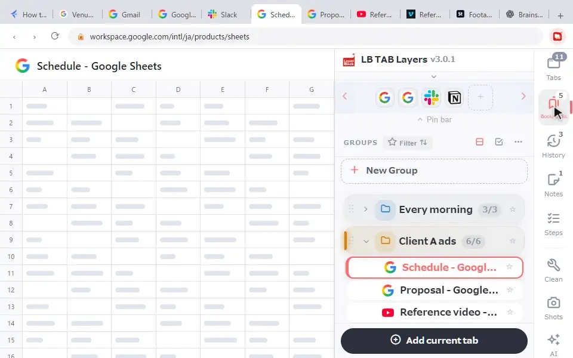

The pin bar in LB TAB Layers holds up to 12 sites you open every day, as icons at the top of the side panel. Right-click a tab → Add to pin bar to add one, click an icon to open the site, and right-click an icon to remove it. The same spot can also show a clock with the weather and a work timer.
Email, calendar, chat, your company’s internal tools. Sites you open many times a day are a small hassle to find every time. Put them on the pin bar, and one click on an icon at the top of the panel opens them.
How do I pin a site?
Right-click an open tab and choose Add to pin bar. The site’s icon appears in the pin bar at the top of the panel. Click an icon and the site opens in a new tab. Right-click an icon you no longer need, and it is removed on the spot.

Everything the pin bar can do
| To do this | Do this |
|---|---|
| Add a site | Right-click a tab → Add to pin bar. It also works on tabs saved in a group (the Bookmarks view) |
| Add by dragging | Drag a tab onto the + slot in the pin bar (Drop to pin) |
| Open | Click the icon (opens in a new tab) |
| Remove | Right-click the icon |
| Reorder | Drag icons left or right |
| Fold or unfold | Click the Pin bar heading |
The pin bar holds up to 12 sites. If you try to add a 13th, you see “The pin bar holds up to 12 items”. The same site can’t be pinned twice.
Your pins are also Chrome bookmarks
When you pin a site, it is also saved in a pinned folder (marked 📌) inside the “LB TAB Layers” folder in your Chrome bookmarks. Unpin it, and it is removed from that folder too. Because your pins are ordinary bookmarks, they are not lost. Curious where that folder lives? See where Chrome bookmarks are stored.
Why can’t I see the pin bar?
In the pins-only view, the pin bar stays hidden until you have at least one pin. That keeps a big empty box from squeezing your list. Right-click a tab, choose Add to pin bar, and the pin bar appears. The same happens if you folded the pin bar or hid it in the settings: adding a pin makes it visible again.
Not sure what to pin?
In the settings, open Data & Sync → Get started / switch and click Find sites you use often. It suggests the sites you opened most in the last 14 days. Only the ones you check go into a 📈 Frequent group, and if Also add to the pin bar is on, they are pinned too. Your browsing history is checked on this computer only and is not sent anywhere.
A clock with the weather, and a work timer
The pin bar area can also show a clock and a work timer. Use the ‹ › arrows to switch between five views:
| View | What you see |
|---|---|
| Pin | Pins only |
| Pin + timer | Pins and the timer side by side |
| Clock + timer | The clock and the timer side by side |
| Clock | The clock only |
| Timer | The timer only |
- Clock: the time and date, plus the current weather and temperature. The weather refreshes every 30 minutes. The place comes from your computer’s time zone, so no location permission is needed.
- Timer: click the numbers to choose 20, 30, 45 or 60 minutes, or Custom for any length. You can Pause and Resume, and when time is up you see “Timer finished!”.
The pin bar timer only measures time. If you want to block distracting sites while you focus, that is a separate feature, the Focus Timer.
Ways to use it
Line up your morning sites
Pin your email, calendar and chat. In the morning, click the icons in order and your day is set up. If you would rather open them all at once, put them in a group and open it with ▶. See open multiple tabs at once.
Daily sites that don’t belong to any project
Time tracking, expenses, the company portal. Sites you use every day, whatever you are working on, fit the pin bar better than a group. They are one click away, and your group list stays tidy.
Pace your work with the timer
Choose Pin + timer and you can keep using your pins while you work in blocks, such as 45 minutes of work and then a break.
Good to know
- Right-clicking an icon removes it right away, with no confirmation. If you remove one by mistake, add it again with Add to pin bar.
- If you don’t use the pin bar at all, turn off Show Pin Bar in the settings to hide it.
For the other basics on one page, see the operation guide or the quick start.
Frequently asked questions
Q. How many sites can I pin?
Up to 12. Right-click a tab and choose “Add to pin bar”, or drag a tab onto the + slot in the pin bar.
Q. I can’t find the pin bar.
In the pins-only view, the pin bar is hidden until you have at least one pin. Right-click a tab and choose “Add to pin bar”, and it appears.
Q. How do I remove a pin?
Right-click the icon in the pin bar. It is removed right away, and also removed from the pinned folder in your Chrome bookmarks.
Q. What is the difference between the pin bar timer and the Focus Timer?
The pin bar timer only measures time. The Focus Timer blocks the sites you choose for the length of the timer.
See it in action


Your everyday sites, one click away.
Up to 12 pins at the top of the side panel, kept as Chrome bookmarks. Plus a clock with weather and a work timer.
Add to Chrome — it's free →